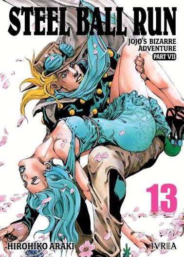

Jojos es una obra de manga originada por el japones Hirohiko Araki en 1987, la cual tuvo su adaptacion al anime en 2011 siendo producida por David Production. La obra a die de hoy cuenta con 9 partes en el manga (la 9na esta en emision), pero en el anime solo se han adaptado las primeras 7, con la 7ma en emision.

Resumen de la obra
Un resumen de las 7 primeras partes de JoJo’s Bizarre Adventure